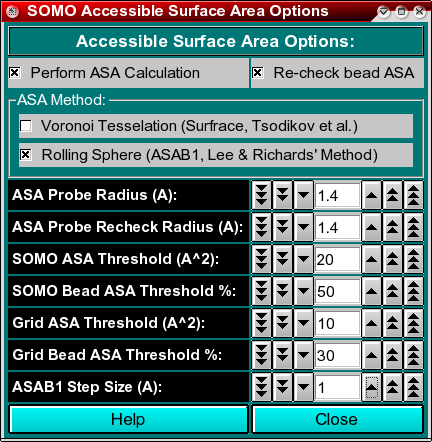

| |
Manual |

In this module, you can set the parameters and options for calculating the Accessible Surface Area (ASA) of your structure. This information is then used by the model builder to discriminate exposed from buried beads, allowing the exclusion of the latter from the hydrodynamic computations. In addition, it offers the possibility of re-checking the ASA of the beads in the final bead model, to better discriminate buried from exposed beads. The ASA module offers two alternative methods, a Voronoi tessellation approach which is an implementation of SurfRace, kindly provided by O.V. Tsodikov (Tsodikov OV, Record MT Jr, Sergeev YV. Novel computer program for fast exact calculation of accessible and molecular surface areas and average surface curvature. J. Comput. Chem. 23:600-609, 2002), and a rolling sphere algorithm (ASAB1, see Spotorno et al., Eur. J. Biophys. 25:373-384, 26:417, 1997; Rai et al., Structure 13:723-734, 2005) based on Lee and Richards' method (Lee B, Richards FM. The interpretation of protein structures: estimation of static accessibility. J. Mol. Biol. 55:379-400, 1971). During our testing, we found that the Voronoi method performs well for relatively small, compact structures, but was a bit hectic when examining large structures, while ASAB1 was more reliable and is thus presented as the default option. As for the bead re-check, only the rolling sphere method is available.
The first two checkboxes, Perform ASA Calculation and Re-check bead ASA,
enable or disable these operations. Both are recommended (default).
Next is the choice of the ASA method for operating on the atomic structure (PDB file),
Voronoi Tessellation or Rolling Sphere. Rolling Sphere
is the default.
In the ASA Probe Radius (A) field, you set the radius of the
hypothetical (water) molecule used to probe the surface of the molecule for
accessibility. The default value is 1.4 Angstroms.
Likewise, in the ASA Probe Recheck Radius (A) field, you set the
radius of the probe used to re-check the beads in the final bead model for
accessibility. The default value is 1.4 Angstroms.
In the SOMO ASA Threshold (A^2) field, you set the accessible surface
area threshold above which a main- or side-chain will be considered
exposed to the solvent in the SoMo method. The default value is 20 A2.
The SOMO Bead ASA Threshold % field lets you set the % of the surface
of a bead that must be at least accessible to re-classify as exposed a bead
previously considered to be buried in the SoMo method. Beads are initially assigned as being
buried or exposed based on the status of the main- or side-chain they represent.
However, during overlap removal some beads initially classified as buried may
become exposed, hence the need to re-check their status. This operation is
performed if the Re-check bead ASA checkbox is selected (recommended).
The default value is 50% for SOMO-type beads.
Likewise, in the Grid ASA Threshold (A^2) field, you set the accessible surface
area threshold above which primary beads will be considered to be exposed to the solvent
in the AtoB (Grid) method. This will allow a better treatment of the beads during the overlap
removal phase.
Finally, the Grid Bead ASA Threshold % field lets you set the % of the surface
of a bead that must be at least accessible to re-classify as exposed a bead
previously considered to be buried in the Grid (AtoB) method. If the Enable ASA screening
function in the SOMO Grid Function Options (AtoB) module is not
selected, beads are all assigned as being buried, and their final status must be checked by
the Re-check bead ASA routine. The default value is 30%.
The ASAB1 Step Size (A) field defines the increment between the 2D slices
in which the structure (or the model) is subdivided in the rolling sphere method, which are then integrated.
The default value is 1 Angstrom.
This document is part of the UltraScan Software Documentation
distribution.
Copyright © notice.
The latest version of this document can always be found at:
http://www.ultrascan.uthscsa.edu
Last modified on September 3, 2009.